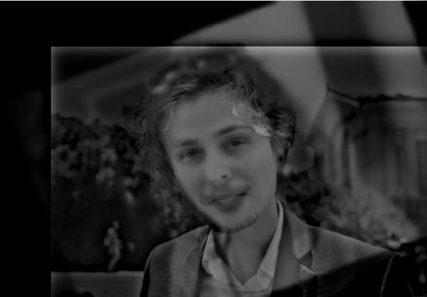
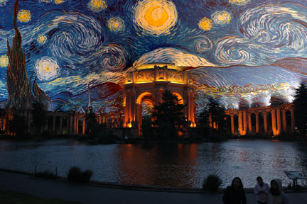

image
CS 194 Project 3
Fun with Frequencies and Gradients!
By Stephanie Claudino Daffara
This project explores different methods of blending images by using frequencies and gradients. With frequencies we are able to achieve hybrid images, where the image changes as you get closer and further away from th image. We were also able to create smooth blends between two images by computing the Laplacian Stack of both images. With Gradients we were able to create very well blended images, where the target image even takes on the colors from the source image and gives the viewer a more natural look. These effects are accomplished through making use of the nature of human perspective, and how we are more aware of gradients as oppose to intensity changes of a color.
Unsharp Masking
Here are some example images of using the unsharp masking technique. To implement this I simply followed the equation:
image + alpha (image - blurred_image)The famous Lenna image above shows my process of applying the unsharp equation. Below is another example using my own photograph of Alcatraz.
Hybrid Images
This part of the project was based on this paper. This "hybrid image" trick exploits human vision perceptual mechanisms, which is based on grouping like frequencies which results in stable percepts at each distance. The following example images below were precomputed to contain either only their low or high frequencies.

The Hybrid image above was created by filtering what frequencies each image displays. Since the operations are defined in the Fourier domain, below I show a Fourier analysis:
Finally I played around with coloring either both layers or just the low-pass or high-pass filtered image to test which one would give me a better result. Here are what these images look like:
Since color provides a strong grouping cue, I believe that placing it on either image simply enhances that image more. In my case I believe that the 3rd image, the one where only the high-pass filtered image is colorized, looks beter and more distinguishable from up close. But it is up to the user what image they want to enhance. Below are a couple more examples:
And here are a couple of failed attempts. When I applied a low-pass filter to the monkey and high-pass to my face, the hybrid image did not work as well. The monkey has many high frequencies that show up close and blended with my face, instead of only showing my face. And the same logic goes for my face, where there were probably a lot of low frequencies making it a better fit for the high-pass filter instead of low. The skeleton and muscle structure hybrid also does not work that well. You can still see both images in both near and far distances.
Gaussian and Laplacian Stacks
These stacks are similar to a pyramid except we are not down sampling at each level. In the following images you can see the images at multiple resolutions, demonstrating the hybrid image moving from one perspective to another.
Multiresolution Blending
For this section I implemented seamless blending by using multi-resolution blending explained in this paper This type of blending uses images at separate image frequencies and blends them at each band, and then adds them together. I was able to use my Laplace stack implemented from earlier, and apply it to each image that I was trying to blend together, and make use of the Gaussian stack and applying it to my mask image.
Here are some of the blends I created:
Toy Problem:
The toy problem's task was to reconstruct an image based on it's x and y gradient information and a bias (which in our case was simply the top left corner of the image). Most of the time this method is better than using frequency domains or gaussian stacks in order to blend images because human's perceive the change from one intensity to another as oppose to the overall intensity itself.
Back to the toy problem, n order to reconstruct the image I created an objective function that solved the following constraints using least squares:
- the x-gradients of v should closely match the x-gradients of s
- the y-gradients of v should closely match the y-gradients of s
- The top left corners of the two images should be the same color
where v is the reconstructed image, and s is the source image. Once I solved for v I got the following image:

Note that because I vectorized this entire problem using numpy's matrix properperties, I was able to complete this reconstruction in less than 3 seconds.
Poisson Blending:
With the same logic as in the toy problem, here we are optimizing the gradients between two images along their shared pixels. We solve the blending constraints with the following formula:
The picture on the left is a direct copy and paste using the formula: Source * Mask + (1-Mask) * Target.
The final image v, the right side image, has direct copies of all the pixels from the target image (Starry Sky) at points
outside the region (black area in mask). The pixels that fill up the selected masked region are calculated
by solving the optimization problem that minimizes the gradient values from the source image and its
boundary pixels. This way the colors in the final pixels from the source image get closer to those from the
target image, creating an illusion and very realistic blend.
I played around with inverting the mask and swapping the source and target images and got the following result:

I like the first result better, but it's really up to you whether you like the Palace matching the Starry Night colors or the Starry Night matching the palace colors. Depends on how realistic or "dreamy" you want the final result to look.
Here are a couple results that I believe worked out well:

Here is an example result that I'd consider failures:
The blending of the little prince in the path failed because the gradients between the tree portion versus the path portion is very different, resulting in the blend becoming very different between the top and bottom portion of the prince.
In comparison with the Laplacian Pyramid blending technique, this one worked out usually a bit better, and gave more realistic results. Here is a visual comparison:
Both of the results in this case look really good. I still believe that the Poisson blending worked out a bit better. You can notice at the corner of the eyes, both the inner and outer corners blend better in the Poisson blending than they do in the Laplacian blending. I think both work out pretty well here because the doggy in the image has a light brown skin color, which to some extent matches the babies skin color. If the dog were some other color then maybe the Laplacian pyramid would not have worked as well since it would only be "feathering" the borders as oppose to making the blend match the target image, as the Poisson blending does.
Since I was able to vectorize every single part of these functions, my code takes less than 5 seconds to compute these image blends.
❤